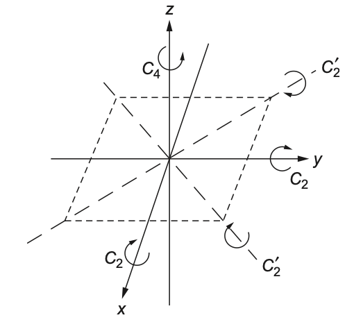

5 군과 표현
% %
%\[ \DeclarePairedDelimiters{\set}{\{}{\}} \DeclareMathOperator*{\argmax}{argmax} \]
5.1 군의 표현
5.1.1 군의 표현과 유니타리 표현
즉 \(U\) 가 \(G\) 의 표현이고 \(a,\,b\in G\) 일 때 \(U(ab) = U(a)U(b)\) 이다. 단 군에 대한 행렬 표현이 항상 유니타리 표현일 필요는 없다.
예제 5.1 (\(D_3\) 에 대한 유니타리 표현)
그림 4.2 에서 보인 \(D_3\) 군에 대한 유니타리 표현은 다음과 같다.
\[ \begin{aligned} U(I)&= \begin{bmatrix} 1 & 0 \\ 0 & 1 \end{bmatrix}, & U(C_3) &= \begin{bmatrix} -\frac{1}{2} & \frac{\sqrt{3}}{2} \\ -\frac{\sqrt{3}}{2} & -\frac{1}{2}\end{bmatrix}, & U(C_3^2) &= \begin{bmatrix} -\frac{1}{2} & -\frac{\sqrt{3}}{2} \\ \frac{\sqrt{3}}{2} & -\frac{1}{2}\end{bmatrix}\\ U(C_2) &= \begin{bmatrix} 1 & 0 \\ 0 & -1 \end{bmatrix}, & U(C_2') &= \begin{bmatrix} -\frac{1}{2} & \frac{\sqrt{3}}{2} \\ \frac{\sqrt{3}}{2} & \frac{1}{2}\end{bmatrix},& U(C_2''') &= \begin{bmatrix} -\frac{1}{2} & \frac{-\sqrt{3}}{2} \\ -\frac{\sqrt{3}}{2} & \frac{1}{2}\end{bmatrix} \end{aligned} \tag{5.1}\]
이 \(U\) 가 준동형사상이라는 것은 쉽게 보일 수 있다. 준동형사상의 성질로부터 자연스럽게 알 수 있는 것이기도 하지만 위의 행렬 표현은 다음과 같은 특징을 가진다.
- 항등 연산은 항등행렬로 표현된다. 즉 \(U(e) = I\).
- 연산의 역원은 역행렬로 표현된다. 즉 \(U(a^{-1}) = (U(a))^{-1}\).
어떤 군의 표현은 faithful 하지 않은데 \(D_3\) 에 대해
- \(\forall g\in D_3,\quad U(g)=I\),
- \(U(I)=U(C_3)=U(C_3^2)=I\), \(U(C_2)=U(C_2')= U(C_2')= -I\)
인 두가지 경우가 그러하다.
정리 5.1 \(U\in \text{Hom}(G,\,GL_n(\mathbb{F}))\) 라고 하자. \(V\in GL_n(\mathbb{F})\) 가 유니타리 행렬일 때 \(U':G \to GL_n(\mathbb{F})\) 가
\[ U'(g):= VU(g)V^{-1} \]
이라면 \(U'\) 역시 \(G\) 의 표현이다.
(증명). \(U'\in \text{Hom}(G,\, GL_n(\mathbb{F}))\) 임을 보이면 된다.
\[ U'(g_1g_2) = VU(g_1)U(g_2)V^{-1} = (VU(g_1)V^{-1}) (VU(g_2)V^{-1}) =U'(g_1)U'(g_2) \]
이므로 증명 끝. \(\square\)
5.1.2 대각화와 기약 표현
군 \(G\) 의 어떤 표현 \(U^K\in \text{Hom}(G,\, GL_n(\mathbb{F}))\) 를 생각하자. 어떤 유니타리 변환에 의해 군의 모든 성분에 대한 행렬 표현이 동시에 같은 형태, 즉 같은 크기의 부분행렬들로 분해된다면 이 행렬표현은 reducible 하다.
이 블록 대각 행렬이 각각 \(n_1 \times n_1, \ldots,\, n_m \times m_n\) 형태의 정사각 행렬이라고 하자. 그리고 \(U^{K_i}(g)\) 가 \(U^K (g)\) 의 \(i\) 번째 블록대각행렬 즉 \(n_i \times n_i\) 행렬을 취한다고 하자.
명제 5.1 위의 \(U^{K_i}\) 역시 \(G\) 의 표현이다.
(증명). \(U^K\) 가 블럭대각행렬화 표현이라고 하자. \(g,\,g'\in G\) 에 대해 \(U^{K_i}(g) U^{K_i}(g') = U^{K_i}(gg')\) 임은 쉽게 보일 수 있다. 따라서 \(U^{K_i}\) 역시 \(G\) 의 표현이다. \(\square\)
이 때 행렬의 direct sum \(\oplus\) 를 이용하면 모든 \(g\in G\) 에 대해
\[ U^K(g) = U^{K_1}(g) \oplus U^{K_2}(g) \oplus \cdots \oplus U^{K_n}(g) = \bigoplus_{i=1}^N U^{K_i}(g) \]
임을 알 수 있다.
다음은 일단 증명 없이 다룬다.
명제 5.2 \(G\) 가 아벨군이면 \(G\) 의 기약표현은 \(1\times 1\) 행렬이다.
예제 5.2 (\(D_3\) 에 대안 reducible representation)
\(D_3\) 를 아래와 같이 \(3\times 3\) 행렬로 표현 할 수 있다.
\[ \begin{aligned} U(I)&= \begin{bmatrix} 1 & 0 & 0 \\ 0 & 1 & 0 \\ 0 & 0 & 1 \end{bmatrix}, \qquad & U(C_3) &= \begin{bmatrix} 0 & 1 & 0 \\ 0 & 0 & 1 \\ 1 & 0 & 0 \end{bmatrix}, \quad & U(C_3^2) &= \begin{bmatrix} 0 & 0 & 1 \\ 1 & 0 & 0 \\ 0 & 1 & 0 \end{bmatrix}\\ U(C_2) &= \begin{bmatrix} 0 & 0 & 1 \\ 0 & 1 & 0 \\ 1 & 0 & 0 \end{bmatrix}, \qquad & U(C_2') &= \begin{bmatrix} 1 & 0 & 0 \\ 0 & 0 & 1 \\ 0 & 1 & 0 \end{bmatrix},& U(C_2''') &= \begin{bmatrix} 0 & 1 & 0 \\ 1 & 0 & 0 \\ 0 & 0 & 1 \end{bmatrix}. \end{aligned} \tag{5.2}\]
유니타리 행렬 \(V\) 를 아래와 같이 정하자.
\[ V = \begin{bmatrix} \frac{1}{\sqrt{3}} & \frac{1}{\sqrt{3}} & \frac{1}{\sqrt{3}} \\ \frac{1}{\sqrt{6}} & -\sqrt{\frac{2}{3}} & \frac{1}{\sqrt{6}} \\ \frac{1}{\sqrt{2}} & 0 & -\frac{1}{\sqrt{2}} \end{bmatrix}. \]
\(U'(g) = VU(g)V^{-1}\) 라고 하면,
\[ \begin{aligned} U'('I)&= \begin{bmatrix} 1 & 0 & 0 \\ 0 & 1 & 0 \\ 0 & 0 & 1 \end{bmatrix}, & U'(C_3) &= \begin{bmatrix} 1 & 0 & 0 \\ 0 & -\frac{1}{2} & \frac{\sqrt{3}}{2} \\ 0 & -\frac{\sqrt{3}}{2} & -\frac{1}{2} \end{bmatrix}, & U(C_3^2) &= \begin{bmatrix} 1 & 0 & 0 \\ 0 & -\frac{1}{2} & -\frac{\sqrt{3}}{2} \\ 0 & \frac{\sqrt{3}}{2} & \frac{1}{2} \end{bmatrix}\\ U'(C_2) &= \begin{bmatrix} 1 & 0 & 0 \\ 0 & 1 & 0 \\ 0 & 0 & -1 \end{bmatrix}, & U'(C_2') &=\begin{bmatrix} 1 & 0 & 0 \\ 0 & -\frac{1}{2} & \frac{\sqrt{3}}{2} \\ 0 & \frac{\sqrt{3}}{2} & \frac{1}{2} \end{bmatrix},& U'(C_2''') &= \begin{bmatrix} 1 & 0 & 0 \\ 0 & -\frac{1}{2} & -\frac{\sqrt{3}}{2} \\ 0 & -\frac{\sqrt{3}}{2} & \frac{1}{2} \end{bmatrix}. \end{aligned} \tag{5.3}\]
이며 모든 군의 성분에 대한 행렬표현이 블럭 대각화 되었다.
예제 5.3 (연속군에 대한 표현)
예제 4.7 에서 차수가 1인 연속군을 보였다. 이 연속군은
\[ U(\varphi) = \begin{bmatrix} \cos \varphi & \sin \varphi \\ - \sin \varphi & \cos \varphi \end{bmatrix} \]
로 표현 할 수 있다. 이 군은 아벨군이므로 명제 5.2 에 따라 위의 표현은 reducible 하다. 유니타리 행렬 \(V\)
\[ V= \dfrac{1}{\sqrt{2}}\begin{bmatrix} 1 & -i \\ 1 & i\end{bmatrix} \]
에 대해 \(U'(g) = VU(g)V\) 라고 하면
\[ U'(\varphi ) = \begin{bmatrix} e^{i\varphi} & 0 \\ 0 & e^{-i\varphi}\end{bmatrix} \]
이므로 \(U_1(\varphi) = e^{i\varphi},\, U_{-1} (\varphi) = e^{-i\varphi}\) 에 대해 \(U = U_1 \oplus U_2\) 이다.
연습문제
연습문제 5.1 (Arfken 17.2.1) \(U\) 가 \(G\) 의 표현일 때 \(a\in G\) 에 대해 \(\left[U(a)\right]^{-1}= U\left(a^{-1}\right)\) 임을 보여라.
(해답). \(U\) 는 동형사상이므로 \(G\) 의 항등원 \(e\) 에 대해 \(U(e) = I\) 이다. \(I=U(e)=U(aa^{-1})=U(a)U(a^{-1})\) 이므로 \(U(a^{-1})= \left[U(a)\right]^{-1}\) 이다.
연습문제 5.2 (Arfken 17.2.2) 아래의 행렬 \(I,\,A,\, B\) 는 예제 4.8 의 표현임을 보여라.
\[ I = \begin{bmatrix} 1 & 0 \\ 0 & 1\end{bmatrix},\qquad A=\left[\begin{array}{rr} -1 & 0 \\ 0 & -1\end{array}\right], \qquad B=\begin{bmatrix} 0 & 1 \\1 & 0 \end{bmatrix} \]
(해답). trivial
연습문제 5.3 (Arfken 17.2.3) 연습문제 5.2 의 viergrouppe 표현은 reducible 임을 보여라.
(해답). \(V = \dfrac{1}{\sqrt{2}}\left[\begin{array}{rr} 1 & 1 \\ 1 & -1 \end{array}\right]\) 에 대해
\[ VIV^{-1}= I,\, VAV^{-1}=A,\, VBV^{-1} = \left[\begin{array}{rr} 1 & 0 \\ 0 & -1\end{array}\right] \]
이다.
연습문제 5.4 (Arfken 17.2.4)
(\(a\)) 어떤 군에 대한 행렬표현을 얻었다면 이 행렬들에 대한 행렬식으로 1차원 표현을 구성 할 수 있다는 것을 보여라.
(\(b\)) 식 5.1 과 행렬식을 이용하여 \(D_3\) 의 1차원 표현을 구하라
(해답). trivial
연습문제 5.5 (Arfken 17.2.5) \(n\) 개의 성분을 가진 순환군 \(C_n\) 은 \(\{\exp(2\pi is/n): s=1,\ldots,\, n\}\) 으로 표현 될 수 있음을 보여라.
(해답). tiviial
연습문제 5.6 (Arfken 17.2.6) 아래 그림과 같이 정사각형을 자기 자신으로 변환시키는 아래 그림과 같은 회전 변환으로 이루어진 군(\(D_4\)) 에 대해 \(2 \times 2\) 행렬 표현을 구하라. 또한 Cayley table 을 만들라.

(해답). \(x\) 축에 대한 \(\pi\) 회전을 \(\sigma_x\) 라고 하고, \(y\) 축에 대한 \(\pi\) 회전을 \(\sigma_y\) 라고 하면
\[ \sigma_x = \left[\begin{array}{rr} -1 & 0 \\ 0 & 1 \end{array}\right],\qquad \sigma_y = \left[\begin{array}{rr} 1 & 0 \\ 0 & -1 \end{array}\right]. \]
이며 \(\sigma_x^2 = \sigma_y^2 = I,\, \sigma_x \sigma_y = \sigma_y \sigma_x -I\) 이다.
\(x=y\) 직선 에 대한 \(\pi\) 회전을 \(\sigma_d\),, \(x=-y\) 에 대한 \(\pi\) 회전을 \(\sigma_{d2}\) 라고 하면,
\[ \sigma_d = \left[\begin{array}{rr} 0 & 1 \\ 1 & 0 \end{array}\right],\qquad \sigma_{d2} = \left[\begin{array}{rr} 0 & -1 \\ -1 & 0 \end{array}\right]. \]
이며 \(\sigma_d^2=\sigma_{d2}^2 = I\) 이고 \(\sigma_d \sigma_{d2}= \sigma_{d2}\sigma = -I\) 이다.
\(C_4\) 는 \(z\) 축에 대한 반시계방향 \(\pi/4\) 회전이며
\[ C_4 =\left[\begin{array}{rr} 0 & 1 \\ -1 & 0 \end{array}\right] \]
이고, \(C_4^2 = -I\) 이며, \(C_4^3 = -C_4\) 이다. Cayley 테이블은 나중에.